Crater Lake
This cartography focused layout explored the potential of 3D scenes and photography to capture the impressiveness of Crater Lake Nation Park. It highlights the elevation and areas of interest for visitors.
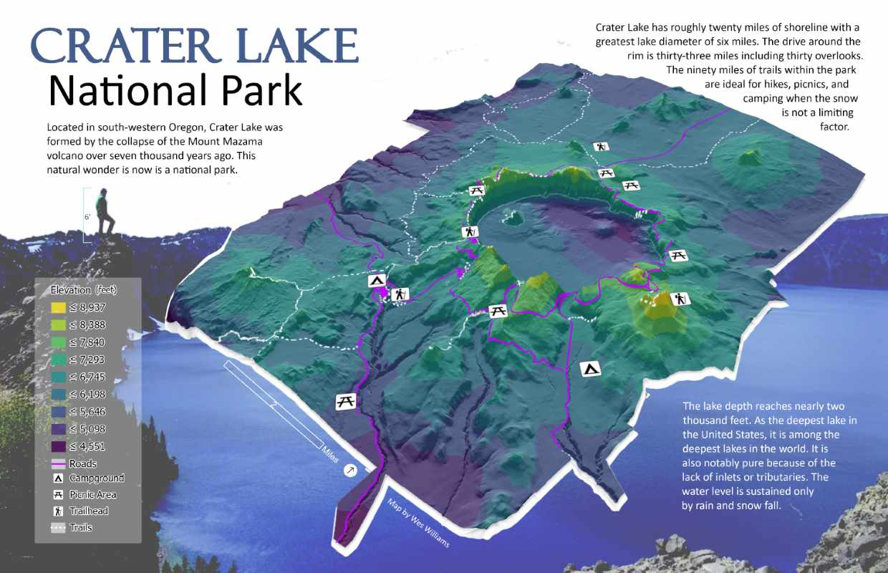
#cartography #3d #spring2024
3D Map Streaming Standards
This research oriented
story map explores standards for streaming 3D imagery including 3D Tiles from Cesium and Indexed 3D Scene Layers (I3S) from Esri.
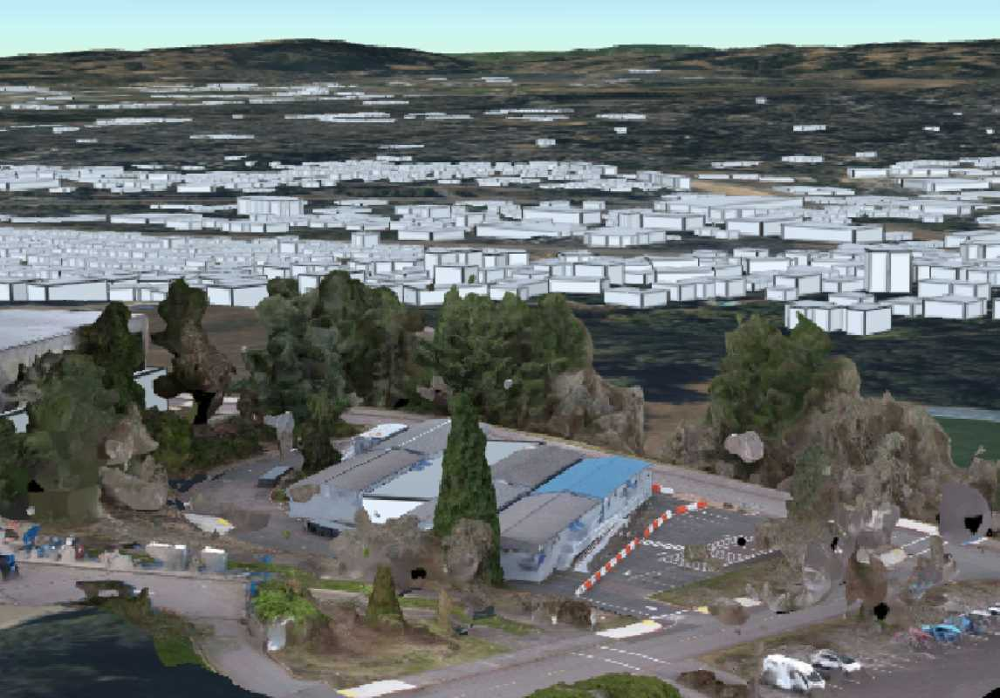
#photogrammetry #3d #summer2024
Google Earth Engine
This research oriented
story map explores how students can leverage GPT in remote sensing with Google Earth Engine to learn and prototype.
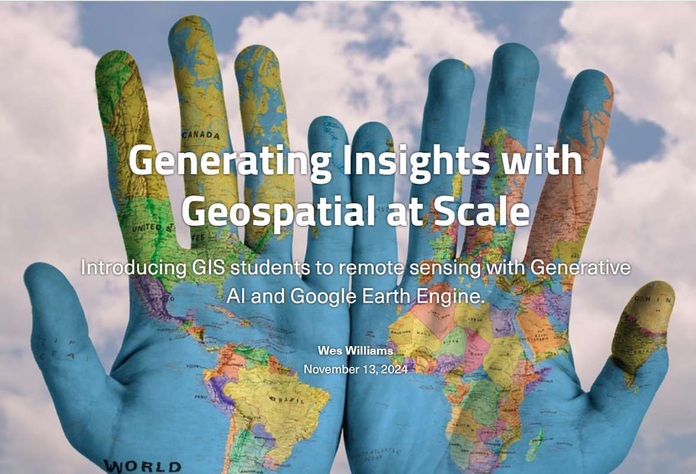
#cloud #ai #remote-sensing #summer2024
U-Pick Crowd Mapping
This interactive
mobile-first website enables u-pick fruit enthusiast to report what's available at PNW farms. Geofencing and a short lifespan of entries gamify data collection for those at the farm and provide breadcrumbs for others seeking a farms with active u-pick. More details are available in this
story map.
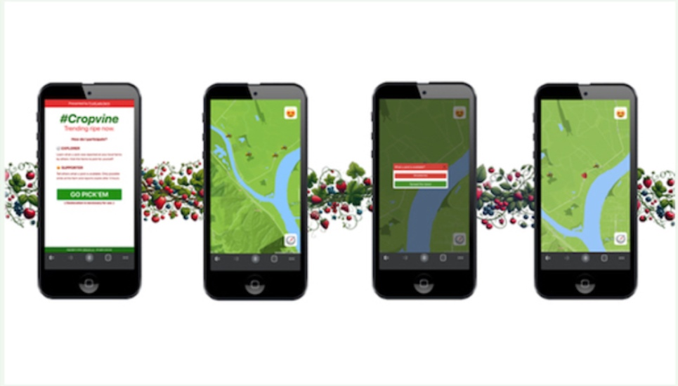
#mobile #interactive #spring2024
U-Pick Network Analysis
This network analysis found the closest routes to u-pick farms near Portland from multiple starting locations. Multiple destinations and traversal were provided for each point of origin. The results formed an optimized, personal fruit loop based on availability for a given day.
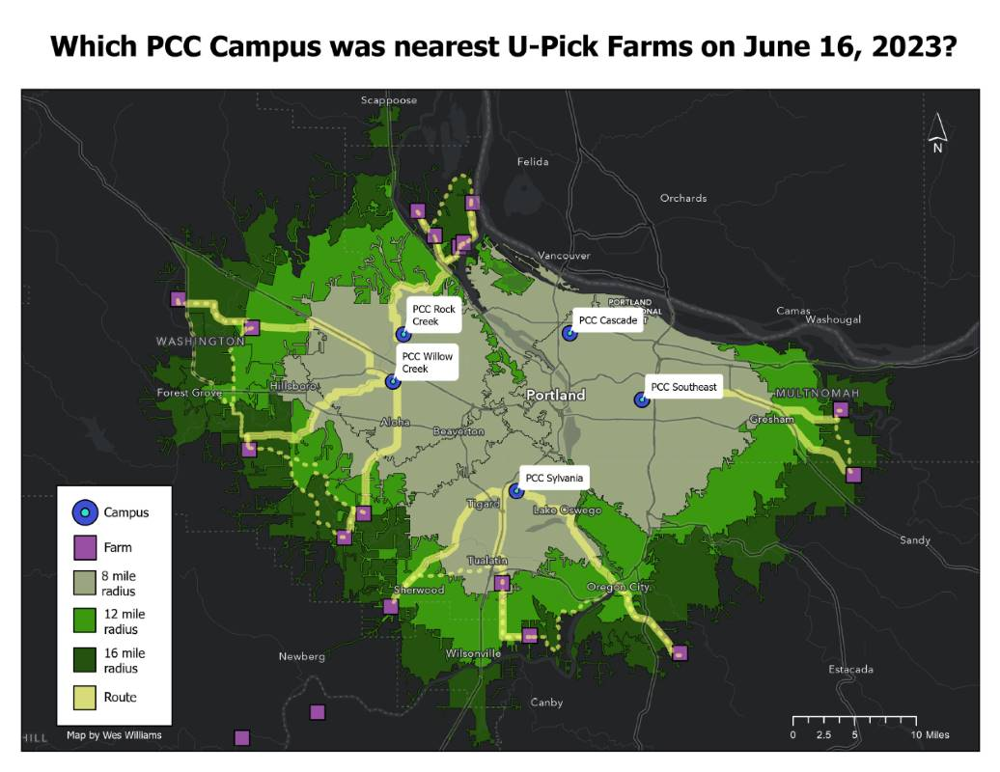
#network-analysis #spring2024
Farmers Infographic
This infographic explores the distribution of u-pick farms and farmers markets within 10 miles of major cities along the I-5 corridor in Oregon and Washington. The charts visualize both the quantity and ratio of each for cities along this route.
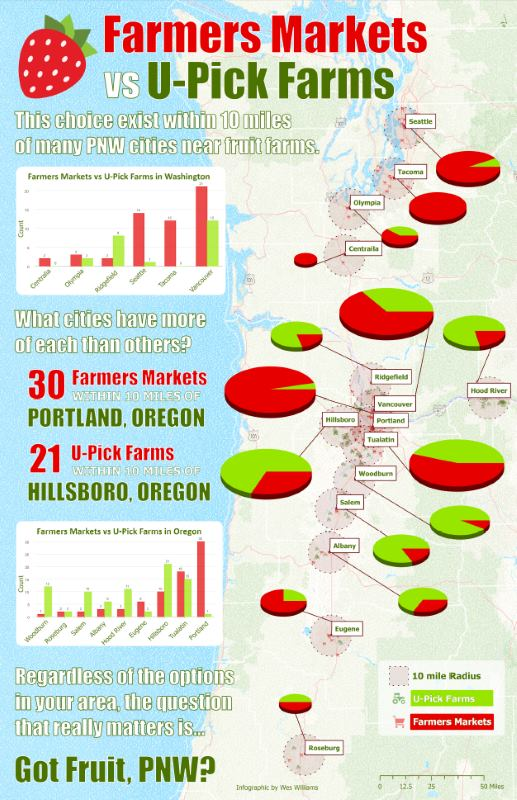
#infographic #spring2024
GPS Analysis
This analysis studied the precision and accuracy of different GPS receivers. High accuracy of the position for the intended target was captured with a high-end receiver and compared against many observations from integrated and low-cost external receivers with various configurations.
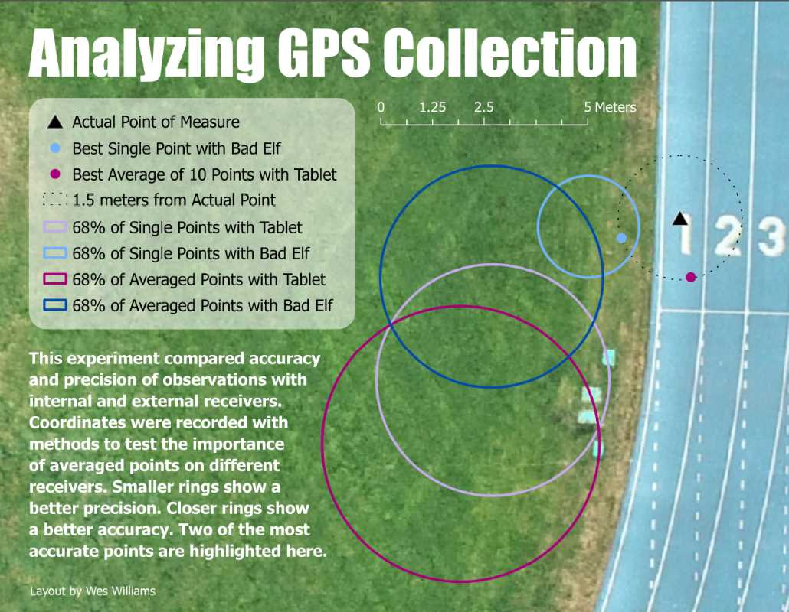
#data-collection #fall2024
Heat Islands
This analysis studied three decades of thermal satellite imagery to discover the average temperature increase for quadrants of Portland metro. Top contributing cities were identified by quadrant. Indicating these experienced more land development in that quadrant.
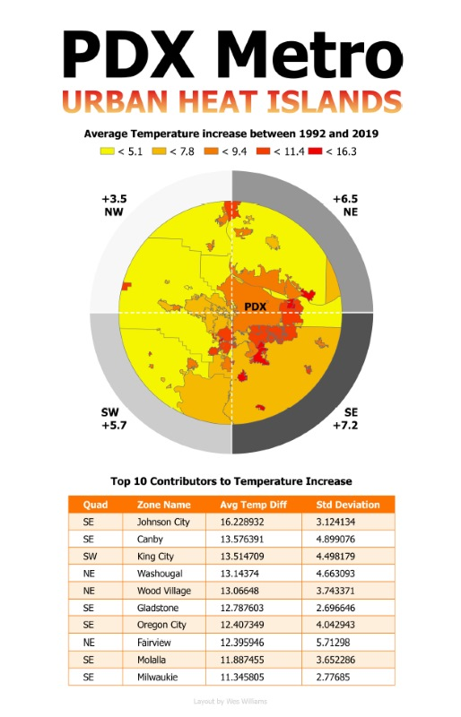
#remote-sensing #fall2024
ML Classification
This anaylsis compared the classification of land types with supervised and unsupervised techniques. It utilized four band aerial imagery and feature heights from lidar for a section of land along the Willamette river in Portland.
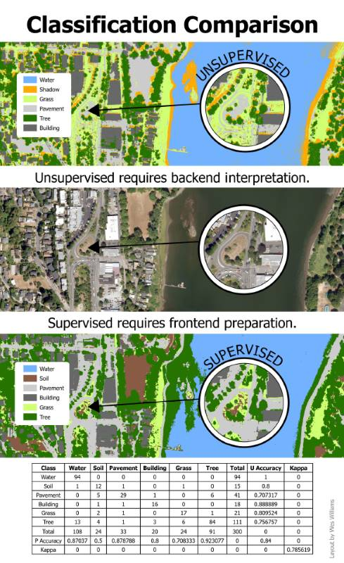
#remote-sensing #fall2024
PDX Hazards
This analysis studies the individual and combined flood, heat and demographic risks in Portland metro. Flood risk were computed with hydrlogic tools from a DEM of the area. Heat risk was determined from thermal satellite imagery. The census bureau's ACS dataset contained demographics for studying socioeconmic vulnerability.
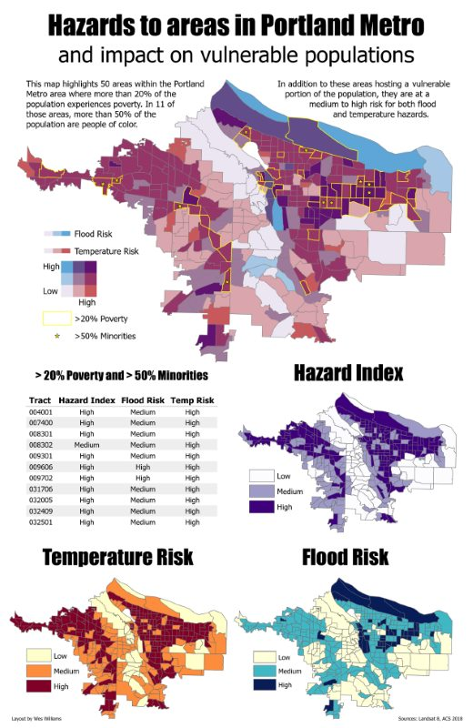
#remote-sensing #fall2024
Post Processed Kinematics
This experiment explored methods for establishing ground control points for UAS missions. Results from low-cost GPS receivers were corrected with open source software and compared against results from high-end equipment.
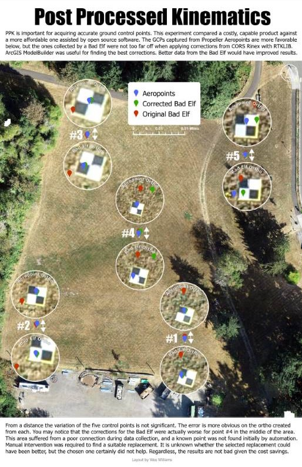
#data-collection #fall2024
Wildlife Corridors
A first exploration of georeferencing, digitization, and cartographic techniques for the purposes of site selection.
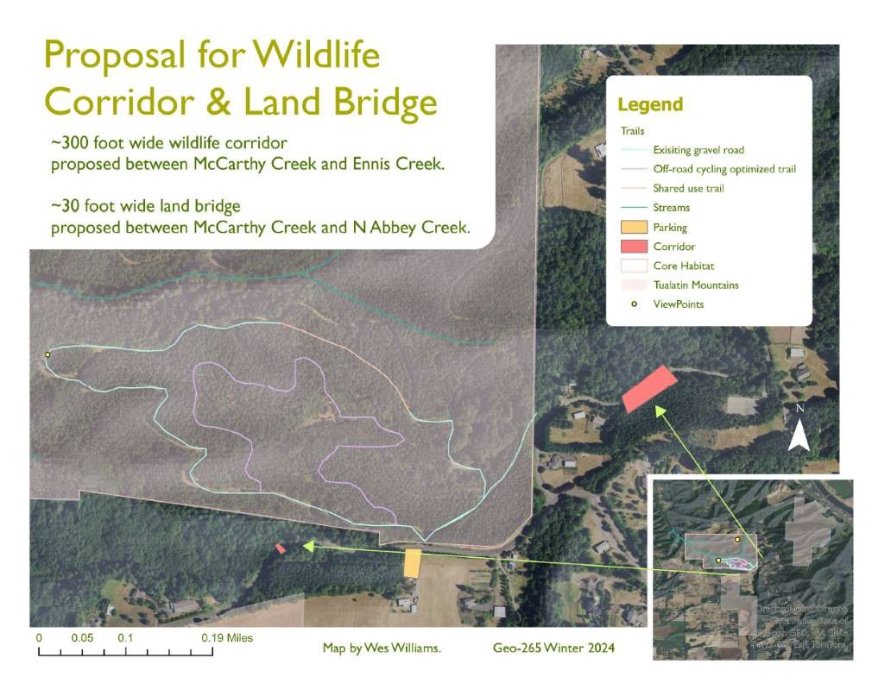
#georeferencing #winter2024